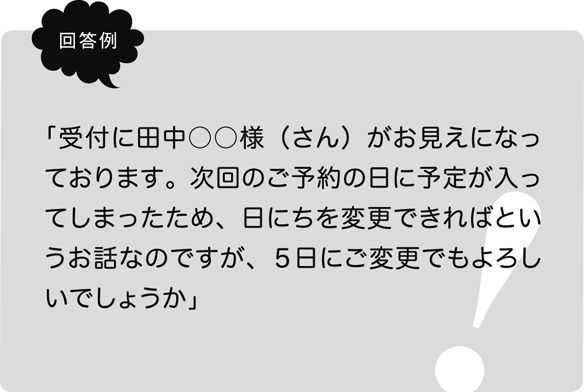
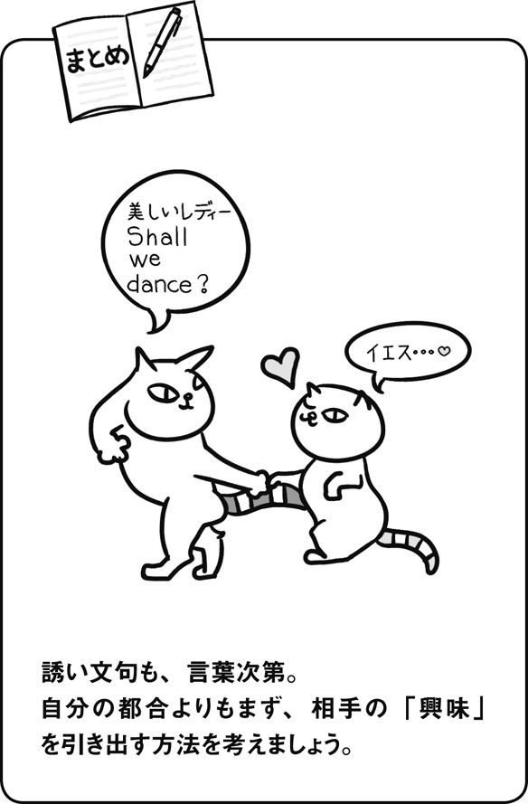
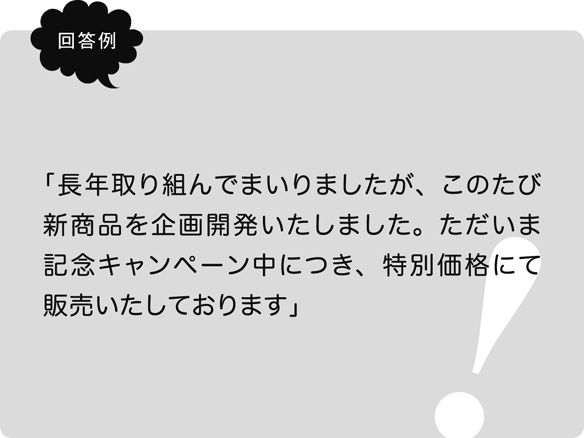
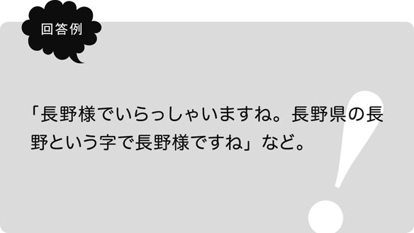
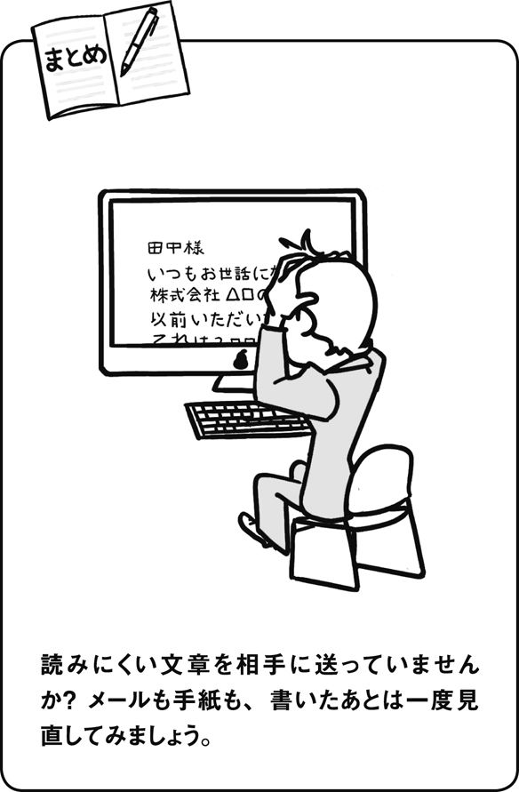

| 言葉づかいの教科書 | |
| 井上 明美 | |
| クロスメディア・パブリッシング(インプレス) (2011) | |
この本は横書きでレイアウトされています。
また、ご覧になる機種により、表示の差が認められることがあります。
株式会社クロスメディア・パブリッシング
大人の表現力が身につく言葉づかいの教科書
井上明美
「どうしたら、きれいな言葉づかいにすることができますか？」
少し話をしてみると、この女性は敬語がまったくできないというわけではなく、「ある程度はできるが、もっとうまく、もっと自然に話せるようになりたい」と考えているようでした。
「何となく直さないといけないと思うけど、具体的にどこをどう直せば正しくなるのかわからない」......そんな方におすすめの、すぐにでも実践できる「大人の言葉づかい」について簡単に触れてみましょう。
そもそも、大人の言葉づかいとは何でしょうか？
たとえば「とても」という言葉は、本来は「とても～でない」と、下に打ち消しの語を伴って使うものでした。
しかし、今では「とてもきれい」のようにプラスの意味で使われています。
本来の意味からするとそれは正しくないということになってしまいます。ですから、これからは「とても見ていられない」などと使うのが日本人としての言葉の品格であり............というようなことは、この本では言いません。
言葉は時代とともに変わってくるものだからです。
言葉に必要なのは、正解か不正解かということだけでなく、何より「相手に配慮した言葉が使えているか？」「その場に応じてふさわしい言葉を使えているか？」ということです。
相手への心くばりが、言葉としてあらわれる。それが、大人の言葉づかいだと思います。
あなたが会社の部長だとして、部下から
「部長も明日の打ち上げに来てみたいですか？」
と言われたらどうでしょうか？
カチンときて、行きたい気持ちがあっても行ってやるか！という気分になるものです。
このように、同じ誤りであっても「しょうがないなと笑って許せる可愛げのある誤り」とこの例のように、気づかず相手を不愉快にさせる「不快な誤り」とがあります。まずは、その点に気づいていくところから「大人の言葉づかい」は始まります。気づき、意識することから始まるのだということです。
・つい使ってしまう誤った敬語や言い回し
・いつの間にか染みついてしまった口癖や書き言葉の癖
・お礼や謝罪などの気持ちの伝え方
・会話を楽しむための言葉の使い方
・相手にやさしい、わかりやすい言葉の使い方
など、本書では日常でよく遭遇する事例を豊富に取り入れ、○×だけではない、生きた敬語・心くばりの言葉づかい書を目指しました。
言葉とは、使う人自身を映す鏡です。
言葉を磨けば自分自身が磨かれていき、また自分を磨いていこうとする意識が言葉を磨いていきます。
ふとしたとき、言葉づかいに迷った際はページを開いて再確認、そんな「言葉づかいの教科書」としてご活用いただければ幸いです。
井上 明美
表現力を磨く３原則
01 言葉に幅を持つ
大人の言葉づかいの原則１
02 時・場所・相手によって使い分ける
大人の言葉づかいの原則２
03 言葉本来の意味を知る
大人の言葉づかいの原則３
大人の会話ができますか？
04 「おいしい」だけでは伝わらない
語彙を増やす
05 あいづちに変化をつける
「話させ上手」の秘訣
06 誤った敬語を使わない
「誰への敬意」か考える
07 相手への配慮を欠かさない
答えやすい言葉を投げる
08 内容を整理してから話す
何の話？ と言われないために
09 人前ではだらだら話さない
一文は短くする
10 心づかいを忘れない
見えなくても丁寧な言葉で
11 使い古された言葉は響かない
「こだわり」「匠」「究極」
12 添える言葉を間違えない
「わざわざ」「せっかく」「さすが」
13 気持ちを促すひと言を
「YES」と言いたくなる誘い文句
言葉の響きを意識していますか？
14 丁寧すぎては慇懃無礼
何でも「させていただく」と言わない
15 言葉をやたらとぼかさない
「たぶん」「大丈夫」「かな」
16 言葉をやたらとぼかさない２
「とか」「～のほう」
17 濁点言葉は使わない
品のある音、品のない音
18 「物事の程度」を上手に表現する
「フツー」「ビミョー」は使わない
19 相手を選ばない言葉を用意する
専門用語、カタカナ語はほどほどに
20 ちょっとした言い回しに注意する
「コーヒーでいい」「コーヒーがいい」
21 いらない敬語を使わない
「お」と「ご」と「あげる」
22 電話応対の注意点
顔の見えない人への心づかい
23「ありがとう」だけですませない
お礼のバリエーションを持つ
恥ずかしくない文章が書けますか？
24 使い慣れた言葉こそ見直す
間違いのない文章を書くために
25 文章のバランスを整える
相手ありきで書く
26 同じ表現を使い回さない
語尾と単語の選び方
27 手紙の基本をマスターする
大人の手紙の基礎知識
28 敬称のいろいろ
「殿」と「様」の正しい使い分け
29 お礼の気持ちは言葉次第
感謝が伝わるメールと手紙
30 お詫びの気持ちも言葉次第
謝罪の意が伝わるメールと手紙
31 ほんの少し手間をかける
もらってうれしい手紙の工夫
巻末特典「言葉づかいのテスト」
→「大人の表現」を意識する
この問題文のように、嫌いなものを目の前にしたとき「すみません嫌いです」と言ってしまっては、同席している人の気分を悪くしたり、つくり手を傷つけたり、雰囲気を壊したりするかもしれません。
子どものうちならば「ニンジンきら～い、いやだ」が許されても、大人が「嫌いです」と堂々と口にしてしまうのは「つつしみが足りない」と思われてしまいます。
そこで、必要になってくるのが言葉の幅です。
「大人の言葉づかい」が「子どもの言葉づかい」と何が違うかと言うと、一番は言葉の幅、表現力にあると私は思います。
同じことを表現するのでも、語彙やちょっとした言い回しの違いで相手に与える印象もずいぶんと変わるものです。
たとえば嫌いという言葉も、
「あまり食べたことがないものでして」
と表現すると、言葉の角もかなり取れて受け取りやすいものになります。これが、子どもの言葉づかいと大人の言葉づかいの大きな差です。
→言葉づかいは心づかい
こうした言葉の幅や言い換えを持つためにはもちろん知識や教養も必要になるのですが、それ以前に「心づかい」が大切だと思います。
どんな場面にしても、ふさわしい言葉づかいというものは、自然と心づかいも感じられるものです。
言葉に幅を持つというのは、言い換えれば、「言葉に心づかいをする」ということ。
聞き手に配慮した心づかいのある言葉が「大人としてふさわしい言葉づかい」と言えるのでしょう。
だからこそ、相手によって少し表現を変えてみたり、また状況に応じて適切な言葉を使い分けたりできるのです。
あなたは、言葉に心をくばっているでしょうか？
→尊敬語に直せばいいというわけではない
言葉を使う場面は、目の前の相手と会話するときだけではありません。
電話応対、手紙やメールといった文書など、さまざまな場面があります。
朝、昼、夜、会社の中、家族、友人、上司、同僚、お客様......その時々、コミュニケーションを取る相手も手段も変わってくるものです。
冒頭の質問の回答例としては、まずは「知る」を尊敬語に直した
「部長、昨晩はどうもごちそうになりました。いいお店をよくご存じですね」
という表現も敬語としては間違いではありません。
しかし、上司に対して「よくご存じですね」では、何だか偉そうな、上から目線な印象を与えかねませんから、
「雰囲気もよくて、料理もどれも美味しくていいお店ですね」
などの表現が、大人の言葉づかいです。
→「格式張った表現」＝「大人の表現」ではない
このように、さまざまな場面に合わせて言葉を適切に、そして自在に変換し、使いこなすようになるのが「大人」と言えるでしょう。
ポイントは、「臨機応変」であることと「心くばり」です。
よく「メールや手紙になると文章が形式的になって冷たい感じがしてしまうのですが、それを避けるためにはどうしたらいいでしょうか？」といった質問を受けることがあります。
たしかにメールや手紙にはある程度定型があるので、ルールに則って文章をつくる人は多いでしょう。
でも、だからと言って、書き言葉（＝漢語調）の表現が適切で、話し言葉（＝和語調）の表現は手紙には不向きかというと、決してそうではありません。
たとえば、次のような言葉を考えた場合どうでしょうか？
Ａ「慙愧の念に堪えず............何卒ご宥恕のほど切に願います」
Ｂ「拝受いたしました。ご厚意、痛み入ります」
ＡＢともに、丁重で表現としても正しいのですが、相手との関係や場面によっては、儀礼的すぎて温かさを感じないという印象を持つ方も多いでしょう。
では、この言葉を、やや話し言葉的な表現に言い換えてみたらどうなるでしょうか。
Ａ「自分の行為が恥ずかしく悔やんでも悔やみきれません......どうかお許しくださいますよう心よりお願い申し上げます」
Ｂ「ありがたく頂戴いたしました。お心づかい感謝申し上げます。温かなお気持ち、胸に染みました」
この例文のように、漢語を少し話し言葉調の言い回しに換えてみても、決して不自然ではありません。
むしろ、先のＡＢよりも、言い換えたあとのほうがやわらかく響き、より素直に相手の気持ちが伝わってくるという印象も受けます。
→言葉を臨機応変に
このように、言葉づかいというものは、正しいか誤りかというのがすべてではなく、いかに適切な表現を用いることができるかが重要なのです。
大切な場面で、どれだけ相手や場面にふさわしい言葉を使い分けることができるか、それが心くばりの言葉へとつながる大切な要素です。
言葉づかいですから、必ずしも１つだけが正解でほかは不正解というものではありませんが、それによって相手がどんな印象を受けるか、どんな気持ちになるか。
常に考えるようにしていくことが、臨機応変に言葉を使いこなすための１つの大きなポイントになります。

→破天荒な人はそうそういない
「お酒、ギャンブル、女性......いろいろと破天荒な人生を送った人でした」「私も破天荒だと思われるんですが、実は真面目なんですよ」。
「破天荒」を使ったこんな表現を耳にしますが、これは誤った使い方です。
なぜこのような誤用が起きてしまうのかと考えますと、これは「破天荒」の意味のとらえ方が違ってしまっているためです。
文化庁が行った平成20年度「国語に関する世論調査」の中で次のような結果が出ています。
問 どちらの意味だと思うか
破天荒（例文：彼の人生は破天荒だった）
ア 誰も成し得なかったことをすること
イ 豪快で大胆な様子
正解はアの「誰も成し得なかったことをすること」なのですが、調査の結果は
ア 誰も成し得なかったことをすること
16.9
イ 豪快で大胆な様子
64.2
と、イの「豪快で大胆な様子」と答えた人の数が６割以上になりました。
「破天荒」とは、本来はこのように、誰も成し得なかったことを初めてすること、未曾有、前代未聞という意味です。
語源は故事にあり、「昔、進士の合格者が誰も出なかった地を『天荒』と言っていたが、ついにそこから合格者が出たとき、人々は口々に『天荒を破った』と言ったとされる」。そこからきたと言われています。
ですから、使い方としては、
「彼の研究は破天荒（＝前代未聞）のノーベル賞なみだ」
というような場合でしょう。
そうとは知らずに「破天荒」を使ってしまうと、本来の意味を知る人からすると「それっておかしいんだけどなぁ......」「この人はものを知らないんだなぁ......」と思われてしまうことや、もっとこわいところでは、自分では謙遜したつもりなのに、自慢げに聞こえてしまうということにもなりかねません。
そこで、「大人の言葉づかい」の原則３としては「知らない言葉はむやみに使わない」こと。
普段何気なく使っている言葉でも、ときには意味を知る、見直すということも大切です。
→目上の人におすそ分けはいけない
冒頭の問題に出した「おすそ分け」「真逆」も同じように間違えがちな言葉です。
たとえばおすそ分けだと、「部長、田舎から届いた果物のおすそ分けです」と使いたくなりますが、すそ（裾）とは、着物の裾のことを指し、「地面に近い衣服の下端の部分」という意味を持ちます。
ですから、謙遜したつもりでも、「ほんのおすそ分けですが」のように目上の人に使うのは、本来適切ではありません。
「田舎から届いたもので、お口に合いますかどうか、よろしければどうぞ召し上がってください」
などの言い方のほうがより好ましいでしょう。
→まさかの真逆
最後に、「真逆」。「真逆」を何と読むでしょうか？
「まぎゃく」と読む人は多いと思いますが、本来の読み方はそうではありません。
「真逆」と書いて、「まさか」と読むのです。ええっそんなまさか！？の、まさかです。
調べてみると、「真逆（まぎゃく）」＝「正反対の」というような意味で使われ始めたのは2002年あたりからのようで、2004年には流行語大賞にもノミネートされました。
もちろん、言葉はどんどんと変わっていくものですから、それが決して悪いということではありませんが、本来の意味を知ったうえで使い分ける。
それだけでも、ちょっとしたひと言にも深みが出てくるのではないでしょうか。
→語彙が違えば聞こえ方も変わる
日常生活で「おいしい」と使うことは多いですが、何でもかんでも「おいしい」「おいしい」ばかりでは、つくり手やごちそうした側、物を送った側なども、感激が薄くなってしまいます。
何がどうおいしいのか表現することも、言葉の幅であり、また相手への気くばりにも通じます。
たとえば、友人の家で「10時間かけてつくった」という力作のビーフシチューを食べたとしましょう。
Ａ「おいしい」
Ｂ「お肉と野菜の、旨みとコクがありますね」
同じものを表現するのでも、言葉・語彙が違うと聞こえ方もかなり変わってきます。つくった方としても、Ｂのような言葉があれば、より嬉しいでしょう。
決して自分のうんちくを披露しようというのではなく、このように少しだけバリエーションをつけ、具体的なひと言を加えるだけでも立派な心くばりになるということです。
では、語彙はどのように増やせるのでしょうか？
一概にひとつと決められるものでもないとは思いますが、たとえば次のような方法があるでしょう。
「本を読む」、「芝居を見る」、「いい言葉づかいをしている人を真似る」など。
ですが、一番は「知らない言葉をそのままにしない」ということではないかと思います。
これは、むずかしい言葉を覚えるということではありません。
耳慣れない言葉に出会ったときや、この使い方は正しいのかと疑問に思ったときなど、「まあいいか」と通り過ぎない。少しでも考えてみる、ときどきでいいから辞書を引く。
それだけでも違うものです。
そうしていくことで、初めは何だか馴染みにくいと感じた言葉でも、意味を知り、使っていくことで自分の言葉に変わっていく＝「語彙が豊かになる」ことに結びつくでしょう。
木にたとえるならば、一本の木に実がなり、熟して成長していくように、語彙を実らせ、豊かに育んでいくことができればいいものですね。
→あいづちの役割
会話は相手があってこそのものですから、一方的に話せばいいというものではありません。相手の話を聞く姿勢や相づちというのも大切な要素です。
「相槌」とは昔の鍛冶屋で、相手と代わる代わる打った槌のことを言います。相手が槌を入れやすいように、呼吸を合わせて作業することが大事です。
会話の「あいづち」もそれと同じで、相手の話をさまたげない、話の調子を合わせるなど、会話がスムーズに進むうえでの重要な役割を持ちます。
→自分のあいづちは案外気づかない
あいづちというものは、言葉づかいや敬語と違って気がつきにくいものです。
たとえば打ち合わせの場などで、相手の話を聞きながら「うん、うん」というあいづちを打っている人などをよく見かけますが、ビジネスや改まった場面での「うん」は不適切ですね。
話を聞いているという姿勢は感じられても、「うん」では何だか偉そうな感じがしたり、不真面目な印象を持ったりと、相手も案外耳障りで不快に感じていることも多いものです。
→あいづちのいろいろ
たとえば「なるほど」とは、「以前から聞いていた通り」、「まことに」、「本当に」などの意味を持ちます。
ほかには、相手への了解や同意や感心などの気持ちもあらわします。「なるほど」「なるほどですね」などは、意味としては間違いではないのですが、「うん」と同様に、どちらが偉いのかわからなくなってしまいます。
「なるほど、そういえばそうだ」「なるほど、そんなこともあるかもしれないな」というように、相手の意見を自分が評価しているようなニュアンスも持ちますので、目上の人へのあいづちとしては、少々注意が必要です。
同意の場面で
「そうですね、部長のおっしゃる通りですね」
「本当に、おっしゃる通りと存じます」
驚いた場面で
「そうなのですか、今初めて伺いました」
「それはびっくりいたしました」
「少しも存じませんで驚きました」
「まったく存じ上げなかったものですから、失礼いたしました」
次の会話につなげる場面で
「それで、どうなさったのですか？」
「その後は、どうなったのですか？」
「それで、何とおっしゃったのですか？」
「それはまたどうしてですか？」
「たとえばどのような？」
→話をさえぎらないあいづちを
あいづちでは、相手の言葉をさえぎってしまわないことも大切です。
自分の意見を押しつけるのではなく、相手と調子を合わせることも会話のうえでの心くばりです。
たとえば「急な仕事が入ってしまって、残業ばかりで......」と言われたとき、次のようなあいづちはよくありません。
×「残業でも仕事があるだけいいよ」
×「私も残業なんてしょっちゅう、上司がいつも急に言ってくるから本当に困るの......」
このように、相手の話を自分の話にすり替える、自分本位の会話になってしまうと会話が終わってしまいます。
「連日は疲れるよね」
「たいへんだろうけど、田中さんだからできることなんでしょうね。私も見習わないと」
相手の話に調子を合わせ、会話をさえぎらないというのも会話のうえでの気くばりです。

→敬語の種類を再確認
敬語というと「学校で習ったけどややこしいから嫌い！」という方も多いかもしれませんが、大人になってあらためて学び直してみると、じつはそう難しいことではありません。
ここでは敬語の意味や使い方を「再確認」するという意味で、「敬語の働き」を見直してみましょう。
敬語はこれまで「尊敬語」・「謙譲語」・「丁寧語」の３種類と言われてきました。そのように習ったという方も多いでしょう。しかし、平成19年文化審議会答申『敬語の指針』では、「現代の敬語の用法や働きを的確に理解するため」として、「尊敬語」・「謙譲語Ⅰ」・「謙譲語Ⅱ（丁重語）」・「丁寧語」・「美化語」の５分類に分けて解説されています。
尊敬語・・・相手側の動作や状態・ものごとなどに関して、相手側を高めて述べるもの。
使用例／先生がおっしゃる、先生のお父様がいらっしゃる、先生の御高著、貴社 など
謙譲語Ⅰ・・・自分側の動作や状態・ものごとなどに関して、向かう相手側を立てて述べるもの。
使用例／先生にお話申し上げる、明日先生にお目にかかる、来月先生のところへ伺う など
謙譲語Ⅱ（丁重語）・・・自分側の動作や状態・ものごとなどに関して相手側に丁重に、また控えめに述べるもの。
使用例／株式会社○○の○○と申します、私の父もそう申しておりました、出張で京都へ参る、拙著、弊社、小社 など
丁寧語・・・相手側に対して、丁寧に述べるもの。
使用例／あちらが私のオフィスです、行きます など
美化語・・・ものごとを美化して述べるもの。
使用例／お肉のお料理、お酒のおつまみ、ご飯 など
こうして分類はされていますが、敬語は「どの項目に当てはまるか」ということよりも、「その言葉は、誰の行為をあらわした言葉か？」と考えることが重要です。
→敬語のポイント
問題文の解説をしつつ、敬語の確認をしてみましょう。
「お夕飯はお食べになりましたか？」は、「食う」→「食べる」→「お食べになる」と尊敬語の形にはなっているものの、「お食べになる」では敬意が薄く、言葉としても落ち着かない感があります。
「明日は何時に参られますか？」については、「参る」は「行く」「来る」の謙譲語（先の敬語５分類表では謙譲語Ⅱ）です。
使い方としては、「出張で京都に参ります」のように、自分が行くという行為を聞き手に対して丁重に表現する言い方です。
ですから「参られる」というように「れる・られる」を語尾につけたところで、尊敬語にはならないわけです。
最後の「メールは拝見いただけましたか？」ですが、「拝見」とは、「見る」の謙譲語です。
つまり、「（私が）あなたのメールや手紙ををつつしんで見ました（読みました）」という自分の行為を指す言葉なので、そこにいくら「ご拝見」などと「ご」をつけたとしても尊敬語にはなりません。
→相手が答えやすい言い方を心がけて
相手に何かを尋ねるという場面も多いものですね。
自分では適切な言い方だと思って使っている言葉でも、会話がそこで止まってしまったり、正しくないために、相手が答えにくくなったりということもあります。
その点から考えても、問題文はすべて「×」。どれも好ましいとは言えません。
Ａは、「ご兄弟（姉妹）は？」→「３人です」というような会話の流れですが、「ご兄弟は？」と質問しておきながら「そうですか、３人ですか」では、そこで話が終わってしまっているため、相手はそれ以上は答えにくいという例ですね。
また、ＢＣは敬語の使い方がそもそも誤りです。
Ｂは「何かほかにお伺いになりたいことは？」の「お伺い」が誤用です。
「伺う」というのは、「自分が（相手に）聞く、尋ねる、訪問する」という意味の謙譲語ですから、いくら「お伺いになる」と「お～なる」をつけても、肝心な部分が尊敬語になっていません。
Ｃの「お客様は、もうお品物はお渡ししましたか？」は、私が実際に聞いた会話です。
お客様が商品をお店の人に渡して包んでもらっているのをレジ横で待っているとき、店員の女性が言った言葉でした。
店員の女性は、お客様が自分に商品を渡したかどうかを確認したかったのでしょうが、これでは自分（店側）がお客様に渡したかどうかの謙譲語に変わってしまっています。
「お渡し」と「お」をつけたことで、尊敬語になっていると安心してしまっている例です。
このような誤用は非常に多いですね。答える相手の身になって、相手が答えやすい、話しやすい言葉で対応しましょう。
→わかりやすく話す
職場やあらたまった場所などでは言葉づかいもそうですが、
話す内容にも気をくばらなければいけません。
「何が言いたいのかわからない」「どういうことですか？」と、相手が聞き返さなければいけないような話し方は避けたいものです。
ポイントは、「わかりやすく話す」ということです。
→「あれ」「あの」では伝わらない
たとえば、わかりづらい話し方の代表例としては、次のようなことがあります。
「この間のあれですが」
「例のあの件ですけど」
などは、その件ばかりに関わっている、今まさにその話題の最中であるならばわかりますが、「あの」「あれ」では、相手もすぐにはわからないこともあります。
メールの件名などに同じく、すぐに相手もわかる言い方で話すというのも、あたりまえですが大切な項目です。
「先日お話しいたしましたC社の見積もりの件ですが......」
というように、何の事柄かはっきりわかるように話しましょう。話を聞く側としても、「これからその話題に移るのだな」と整理しやすくなります。
これは、プライベートでも同様です。
「あれ」「あの」「その」「ほら、この間あったあれだけど」では、どの出来事を指しているのかわからないことがありますよね。
何の話かわかるように、相手にわかりやすい会話を心がけましょう。
→順序立てて話す
次に、順序立てて話すというのも話をわかりやすくするための大事なポイントです。
Ａ「この間、寝る前に本を読んだんだけど、案外おもしろい本だったの
Ｂ「何の本？」
Ａ「読みだしたら止まらなくて、結局朝までかかって読んじゃった」
Ｂ「おもしろいと途中でやめにくいよね、推理小説か何かなの？」
Ａ「そうそう、この間行ったショッピングモールの中の本屋さんが新しく広くなったの知ってる？」
Ｂ「知らない」
「知らないし、本の題名もわからない」というＢさんの声が聞こえてきそうです。
これでは話が次々に飛んでしまっています。せっかくＢさんはＡさんに話を合わせているのに、Ｂさんの気づかいもどこ吹く風、何の本かも結局わかりませんし、しまいには本屋さんの話に変わってしまっています。
これではまったく自分本位、自己中心的な会話ですね。
話が変わるのならば、「そういえば話は変わるけれど」「本で思い出したけれど、この間行った○○がね」というように、ひと言前置きするだけでもわかりやすくなるものです。
話をわかってもらえないときなど、「なぜわかってくれないんだろう」と思ってしまうものですが、相手を責めるより先に、自分の話が果たしてわかりやすくまとまっているか？ と考えることも必要です。
相手に理解してほしいのならば、それ相応に自分側もわかりやすく伝えるという工夫が大切で、そのちょっとした手間も話すうえでのマナーのひとつです。
→切れ目がないと頭に入ってこない
人と話をするときに、気をつけなければいけないことは何でしょうか？
その１つが、「だらだらと文章を続けない」ということです。
特に人前で話をするときや緊張しているときなどは、冒頭の問題文のように文章が長くなりがちです。
長くてまとまりがないというのは、話が前後してしまい、何を言っているのか結局よくわからないということになってしまいます。
一文一文を適度な長さで切り、筋道を立てた話し方を心がける必要があります。話がまとまっていませんと、「あ～」「え～」「その」など、間をつなぐためについ余分な言葉が入ってしまうものです。
新郎の山田君は私の直属の部下でありまして、え～......仕事ぶりはと言いますと......あ～......非常にまじめで、性格も明るく......え～......取引先や社内の人間からも可愛がられており......上司の私としても、そのぉ～......
のような例ですね。
文章に切れ目がないのでただでさえ聞き取りにくいのですが、このように「あ～」「え～」が間に挟まってしまうと、話もあまり頭に入ってこないものです。
これは、スピーチということで内容を一生懸命暗記するのですが、暗記した内容を一字一句そのまま話そうとするあまり、一本調子に音読してしまうなどの理由が考えられます。
結婚式のスピーチなどは緊張してしまうのもわかりますが、こういった席でのあいさつは短くまとめることが大切です。
「乾杯の音頭を」と言われ、グラスを手にみな立っているのに、なかなかあいさつが終わらないこともよくありますね。
→わかりやすいたとえ話から入る
では、伝えたいことをうまく聞き手に届けるにはどうすればいいのでしょうか？
それは、常に聞き手の気持ちを考えることです。
国語学者の金田一春彦先生が、講演会などでお話をなさる姿をそばで見聞きして感じたのは、「聞く側が第一」ということでした。
たとえば、礼儀正しさや思いやりについて話をする際にも、いきなり「ポライトネスとは、英語のポライトの名詞形であって......」といった話し方をなさることはありませんでした。
初めからむずかしい話をしたり、聞き手の興味を無視して言いたいことだけを終始解説したりするのでは、聞き手も堅苦しく感じてしまうものです。
「○○というような場面がありますね」というように、誰もが簡単に思い描くことができるような例を挙げるなど、あくまでも聞き手が身近に感じる題材から入るものが多かったように感じます。
身近に感じるということは、相手が耳を傾ける、関心を持つということにつながるわけです。
→聞き手が第一
私たちは言いたいことがあると、その事柄のみにとらわれてしまいがちなものですが、こちらが言いたいことと、相手が聞きたいことというのは必ずしも同じとは限りませんね
話す内容がどれだけ素晴らしいものであっても、聞く耳を持ってもらえなければ一方通行で終わってしまいます。
伝えたいことを本当に伝えるためには、「自分が言いたいこと」と「聴衆の聞きたいこと」を近づけなくてはいけません。
そのための作業が、相手が興味を持ってくれる要素を取り入れながら話すということです。
聞き手が興味のある視点に立って話すことは、相手に伝える工夫であると同時に、聞き手側に立った気くばりでもあるのでしょう。
冒頭の問題文は、新郎を称える言葉を中心にしたいのでしょうが、会社の業績とごちゃごちゃになってしまっている例です。何を一番に伝えたいのかを、常に頭に置いて話すだけでも違うものです。
「今先生に伺ったら大丈夫ということでしたので、では１日の予約を５日に変更しますね」
病院や学校などの場合、自分側の人間でも「先生」という呼び名は不自然ではなく許容範囲と思う人も多いでしょうが、「先生がおっしゃる」「先生に伺う」などの言葉は、あまりにも自分側を高めすぎている言葉と響くことがあります。
何より、冒頭の言葉。
たとえ座っている場から聞こえなくても、窓口や待会室付近では中の会話が聞こえているということも案外多いものです。
相手と面と向かって話す場合は、それなりの敬語を使うことができても、相手がいないとなると言葉づかいが一変してしまうというのも、聞いていて不快感を与えます。
→外の人と接していることを忘れない
先の病院での会話同様、顔が見えないという点では電話も同じです。
電話を取り次ぐ場合に、保留ボタンも押さずに相手に代わってしまったり、受話器に手を当ててふさいでいるから安心してしまったりしていると、自分では気がつかなくても、受話器越しに聞こえていることが多いものです。
「鈴木さ～ん、電話です。○×商事の田中さんが何か急ぎだとか言ってます」
いくら普段の応対がよくても、これでは相手も気を悪くしてしまうでしょう。言い換えるのであれば、
「鈴木さん、○×商事の田中様よりお電話で、お急ぎのご相談とのお話です」
など、相手への敬意を欠いてはいけません。電話や顔が見えない場面でこそ、心くばりはあらわれるものですね。

→「こだわり」の本当の意味
元来マイナスの意味であっても、それとは正反対にプラスのいい評価の意味へと昇格してしまった、そんな珍しい言葉もあります。
この「こだわり」がいい例です。
「こだわりの味」、「こだわりのカレー」、「こだわりの寿司」、「こだわり野菜」......食材や料理のみならず、こだわりの宿、こだわりの一品、こだわり亭、こだわりサロン、こだわり便、など枚挙にいとまがないほどです。
今ではすっかりいい意味の言葉として広まった「こだわり」ですが、本来はこのようなプラスの使われ方をする言葉ではありませんでした。
「こだわる」とは、」「つまらないことに気持ちがとらわれて、そのことに必要以上に気をつかうこと」という意味を持つ言葉です。ですから、本来の使い方としては
「昔のことにいつまでもこだわってばかりいる」
というように、執着しすぎる、心に引っかかるというようなよくない意味の言葉でした。
しかし、現在使われている「こだわり」は、「追求心や不屈の精神」、「意気込み」、「ほかには譲れない思い」、「誰も真似の出来ない技」など、という意味で様々な分野で使われているようです。
「こだわりの○○」とひと言で表現することができて便利なものですが、使い過ぎてはかえって安直な響きに聞こえてしまいかねないものです。
→ほかの言葉で表現したほうが深みがある
では、どうすればいいかと言うと、やはり別の言葉に置き換えてみることが必要です。
たとえば「匠の業」というのも、
○○の第一人者が30年かけてたどり着いたひと品
などと表現することで、言葉に含蓄が出て、その人物がいかに素晴らしいかと想像が湧いてきます。
大切なのは、自分の言いたいことに対して「今使おうとしているのは本当に適切な言葉なのか？」と意味を考えながら使うこと。安易な言葉にばかり飛びつかないという工夫です。
言葉の響きではなく、内容に深みを持たせるようにするのが大人の言葉づかいでしょう。

「わざわざ」・・・ほかのことのついでではなく、特にそのためだけに行うさま
「せっかく」・・・ついでではなく、そのことのために特にするさま
と、意味もよく似ています。
相手の手間を慮る言葉なのですが、使い方を誤ると余計なニュアンスがつけ加えられてしまいます。
問題文のような言い方をしてしまうと、「せっかく時間をかけて準備したんだから、食べないなんて失礼！」とも受け取れます。
「せっかくいらしてくださったのですから、どうぞ召し上がってください」ならばまだわかりますが、「せっかく○○したのだから」では、恩着せがましい感じがしてしまうのです。
ほかに、も次のような危なっかしい言い方もあります。
「わざわざ、こんなお気づかいまでいただかなくてもよろしかったのに、かえってすみません」
「せっかくですから、出かけましょうか」
「わざわざいらっしゃったのですから、お上がりください」
一見、丁寧な言い方にも感じますが、でも何だか気になるという人も多いでしょう。
「そんなことをしてくれなくてもよかったのに」という意味が強調され、受け取り方によっては「本当は負担だけど......」というふうにも聞こえかねない言い方です。
本当は「うれしい」「申し訳ない」と思っていたとしても、言葉の使い方ひとつでニュアンスも変わり、皮肉に聞こえてしまうこともあるものです。
→「わざわざ」「せっかく」の正しい使い方
では、「わざわざ」「せっかく」を使ってはいけないのかというともちろん違います。
「わざわざ」「せっかく」という言葉も、適切な場面で正しい使い方ができれば丁寧に気持ちを伝えてくれます
「お寒い中、わざわざいらしてくださったのに、父の帰りが遅れておりましてすみません」
「せっかくのお誘いを申し訳ございません」
こうした使い方が自然と出てくるようになれば、相手からも「この人は丁寧な人だ」「礼儀正しい人だ」と与える印象も違ってきます。
→慣れない言葉は出てこない
では、どうすれば誤解されない適切な言葉づかいができるようになるのでしょうか？
一番の秘訣は、「使い慣れる」ということです。
そもそも、どうして言葉を使い間違えてしまうかというと、言葉の意味自体を知らないということもあるのでしょうが、同じくらい多いのは「丁寧な言葉づかいに慣れていない」ということだと思います。
いつも使っていないのに、急にあらたまった場面で使おうとするから「つい」口が滑って間違ってしまうのです。
でも、誰も初めから上手に話せるわけではありませんから、最初はそれでいいと思うのです。
たとえば新人の店員さんの言葉が完璧でなくとも、「ああ丁寧に話そうとしているんだなぁ」というのが伝わってくれば、その気づかいは嬉しいと感じるものです。
そうして場数を踏むことで誤りも減り、より適切な言葉づかいへと変わっていきます。
いつでも礼儀正しい大人の言葉づかいができる人というのは、迷いがありません。
迷いがないというのは自信にもつながりますし、何より相手に不快な思いをさせることがありません。
そのためには、使い慣れるということ。
普段から、人に対して丁寧な言葉で話そうと意識することです。
→自分の都合を優先しない
冒頭の問題文のように、何かイベントなどを開く際に連絡をすることもあるかと思います。
プライベートな場面と会社行事のような場面、直接会って誘うか、メールや文書での誘い状によるのかでも変わってきますが、心がけることは同じです。
それは、相手が興味を持つような内容を盛り込む、返事をしやすいような、わかりやすい言葉でまとめるという点です。
たとえば次のようなとき、どんなふうに誘えばいいでしょうか？
「今度○△ホールでこんな講演会があるんだけど行ってみない？すぐに返事をしなきゃいけないんだけど、どう？」
急な場合は、もちろんすぐに返事をしなければいけないこともあります。しかし、あまりに急かされるのも行く気が失せてしまう場合もあるでしょう。
「急いで返事して」という誘い方では、たとえ相手にその気があっても「そんなに急ぎなら、やっぱり止めておこうか......」ということにもなりかねません。
返事を伺うにしても、もっと違う聞き方もできるわけです。相手に来てほしい場合ならばなおのこと、相手の気持ちを伺いつつも、押しつけがましくない姿勢で上手に誘いましょう。
「近所の○△ホールで、来月10日に○○さんの講演会があるんですって。人気の先生だし、おまけに今回は無料だから、すぐ定員になっちゃうという噂なんだけど、もし興味があったらどうかなと思って」
というような話の内容であれば、「日にちはいつなんだろう？」「いつまでに決めないとダメなの？」と、相手が困ることもありませんね。
「よかったらご一緒に」「一緒に行かれたらうれしいけど、無理はしないで」というように、「そうしてもらえたらうれしいけれど、あくまでもご都合優先で」という気くばりは大切です。そのうえで、相手も楽しそう、行ってみたいと思うようなひと言を盛り込むことが、ポイントです。


「一時自粛させていただいておりましたが、営業を再開させていただき、......現在、対応させていただいております」
といった例を見ることもあります。
「させていただく」も、適切な場所にところどころ使うのならば問題にはなりませんが、過剰に使われることが多く、「どうも気になる」と言われることの多い言葉のひとつです。
「丁寧な言い回し」という印象が強いからなのか、過剰な「させていただく」は、政治家の発言やビジネス場面での営業の言葉などにも多く見られます。
たとえば次のようなフレーズです。
「そのように判断させていただき、受け止めさせていただきました」
「申し出をさせていただき、できる限り努力をさせていただきます」
「テレビのCMでも宣伝させていただいておりますので、お客様もご存じかと思いますが、本日はその商品のカタログをお届けさせていただきました」
たしかに丁寧な印象はありますが、まだるっこしいというか、聞いていてだんだんと疲れてしまう言い回しです。
→させていただくの用法
そもそも、「（さ）せていただく」とは「する・させてもらう」の意の謙譲語です。
しかし、使い方が適切でないと、不自然さや、もっと言えば失礼な感じすら与えかねないおかしな言葉に早変わりしてしまいます。
「させていただく」というのは、相手の依頼や許可を得て「（そう）させてもらう」場合と、相手の厚意や恩恵を得て「（そう）させてもらう」というような、許可や恩恵などがあって使われる言葉です。
「させていただく」が適切な例
１「出席させていただきます」
２「使わせていただきます」
１は、たとえば、結婚式の招待を受けたような場合に、「出席させていただきます」と返事する例。それは相手から出席の依頼や許可を得て、答えているので適切です。
２は、相手が「よかったらこのペンをどうぞお使いください」というような場面で、「はい、お言葉に甘えお借りします、使わせていただきます」と答えるような例です。
どちらの例も、相手からの依頼や許可や恩恵が関係しているという点で共通しています。
それに対して、先ほど出した「開発させていただく」「判断させていただく」「努力をさせていただく」などの例は、それぞれ
「判断いたしました」
「努力いたします」
あたりで十分通じるものです。
相手から何か依頼を受けたわけでもなく、特に許可も必要としない、また、相手から厚意や恩恵を受けたわけでもない。
このような場面で「させていただく」を過剰に使ってしまうと、相手からすれば「慇懃無礼」であったり「不自然さ」を与えかねません。
気持ちとしては、「いたします」や、あるいはそれよりも丁寧さを表現したいということもあるのでしょう。
言葉は、たしかに長い言い回しになると丁寧な印象は増すものですが、それは場合によりけり。
場面に合わせて上手に使いこなしましょう。
時には、「いたします」「～いたしております」とはっきり言い切ってしまったほうが、相手の心象もよくなるかもしれません。

→「......何だろう」って、何だろう
「たぶん」「かな」といった「あいまい言葉」「ぼかし言葉」をよく耳にします。聞こえ方をやわらかくするために使っているとも考えられますが、この例文のように明確な返答を求められているような場面での「あいまい言葉」は適切ではないでしょう。またあらたまった場面でなくとも、日常の場面の中で
「って言うか、もう間に合わなかったりして」
といったあいまい表現、ぼかし言葉の例は多いですね。
無意識で使っていることもあるのでしょうが、あまりにも多いとだんだん気になってしまいます。
特に私が気になるのは、次のような表現です。
「驚きって言うか、何だろう......感激したみたいな」
この、「何だろう」です。すぐに言葉が思いつかないというような気持ちなのでしょうが、
「何だろう......素晴らしくて自分にはできないなみたいな......何だろう......非常に学べたなと思います」
このようになってしまうと、それこそ聞いているほうが「何だろう」と問いたくなってしまいます。
おそらく、使っているうちに癖になって抜けなくなってしまっていることも多いと思うのですが、こんなぼかし言葉にも出くわしたことがあります。
上司と思われる女性が部下の女性に言っていた言葉です。
「新しいのが入っていたら、出してほしいかも」
「時間があったら、揃えてほしいかも」
「余った分は持って来てほしいかも」
おそらくこの女性は、年下の部下の女性に気をつかう、不快に思われたくない、偉そうに思われたくないなどの気持ちから断定するのを避けたいのでしょうが、こうまで続くと配慮の気持ちも反対に不自然な言葉や不愉快な言葉に変わってしまいかねません。
たしかに上司と部下であっても、場面によってはやわらかい言い方を用いたいというときもあります。
相手に何かをお願いする場合のやわらかい、親しみのある言い方としては次のような言い方もできるでしょう。
「新しいのが入っていたら出しておいてもらえると助かるのだけど」
「もし、時間があったら揃えてもらえる？」
「余った分は、私の方で預かりますね」など。
→責任転嫁にも聞こえてしまう
また、自信がないときについ使ってしまうぼかし言葉に「大丈夫」「たぶん」があります。たとえば、
「商品のお届けは５日で、大丈夫ですか？」
問題文の「たぶん大丈夫」もそうですが、この「大丈夫」という言葉は、あちこちで重宝がられているようです。
これは、言い換えるならば
「商品のお届け日でございますが、５日でよろしいでしょうか」
「５日到着になりますが、よろしいでしょうか」
「よろしゅうございますか」
となるでしょう。
「大丈夫」も相手への配慮や婉曲な表現のつもりで使っているものと思われますが、たとえば仕事の話などをしているときに「お打ち合わせは井上様のお宅で大丈夫ですか？」などと使われてしまうと「......この人は大丈夫かな」と思ってしまうこともなくはありません。
あらたまったシーンで「大丈夫」というのはやや幼稚なイメージがしますし、相手の都合や気持ちを伺う配慮や婉曲表現も度を越してしまうと自身の判断を人任せにしているような「責任転嫁」の印象すら与えてしまいます。
自分の口癖に注意して、なるべく言葉をぼかさないように練習していきましょう。
「昨日の夜、テレビとか見てたらそのまま寝ちゃったんだよね」
といった日常の会話だけでなく、お客様と会話するようなビジネスの場面でも多いですね。
「いくつかカタログとかお持ちしましょうか」
「ほかにパープルとかのお色もありますが」
「○○」と言い切ることを避けたいのか、相手の都合を伺ったり、同意を求めたいのかもしれませんが、いずれも「とか」は必要ありません。自分の言葉に自信がなくて、あいまいにぼかしたいのかと思ってしまうような例です。
「とか」とは、本来は物や動作などを並列するときに用いる言葉です。
「赤とか黄色とか暖色系の色もいくつもあります」
「入学式に合わせて、洋服とか靴とか、いくつか買いました」
「遅くなるなら、電話をするとかメールをするとか、できたでしょうに」
また、ほかにも、他人から聞いたことであったり、自分ではっきり思い出せなかったり不確かであることをあらわすような場合にも用いられます。
「何だか、急用が入ったとか言って、先ほど出かけていきましたが」
「先生のご郷里は、たしか大阪だとか聞いたような覚えがあります」
「来週は、たしか出張だとか言っておりましたが」
このように、「赤とか黄色とか」→「赤や黄色」「赤、そして黄色と」というように２つ以上の物事を並べる場合。
「たしか出張だとか言っておりましたが」→「たしか出張だと、そんなふうに言っていた、聞いた覚えがある」というような場合に用いられる言葉です。
→「～のほう」
さらに、もう１つ。
以前から言われていることですが、「～のほう」というのもいまだに多く使われるぼかし言葉です。
「～のほう」とは、もともとは「どちらのほうにお住まいですか？」のように方向や方角を指したり、露骨な言い方を避けて、やんわりと表現するような場合に使われる言葉です。
ところが、だんだんと使い方が変わって、
「おタバコのほう吸われますか」
「お席のほうは、こちらでよろしかったでしょうか」
「ご注文のほうお決まりですか」
「ご注文のＡセットのほうお持ちしました」
「お会計のほうは、1700円になります」
このようにコンビニエンスストアやファミリーレストランでよく使われ始め、「ファミコン言葉」などとも呼ばれていたようです。
よく問題に挙げられる言葉のひとつでしたが、最近ではお客さん側のあきらめもあるのか、やり玉に挙げられることも少なくなったようです。
しかし、むやみやたらに使われると、不愉快、耳障りと感じる人も多いでしょう。
→いい意味のぼかし言葉
ただ、ぼかし言葉を使ってはいけないというわけではなく、ぼかし言葉の中でもいい意味で使われるものもあります。
「コーヒーでも飲みましょうか？」
「駅から３分ほどお歩きいただきますと、○△銀行が見えてまいりますが、その隣のビルでの３階でございます」
の「でも」や「ほど」のような例です。
不要な場面ではやたらとぼかさない。あいまいにしない。
必要な場面では、適度にぼかす。
そうして上手に使い分け、言葉づかいのレベルを高めていきましょう。
→濁点、詰まった音
金田一春彦先生の元で秘書をしていたときのことです。
先生はおおらかな方で、ほかの人の言葉づかいを指摘したり非難したりということはほとんどありませんでしたが、ある時「気をつけるべき言葉はありますか？」と聞いてみたことがありました。すると、こんな答えが返ってきました。
「『でっかい』とか『ぶっちぎる』などの濁る、詰まるような言葉は、俗っぽいし、響きも品がないものが多いので、あまり使わないほうがいいね」。
決して使ってはいけないということはないのですが、たしかにそういう響きの言葉というのは、自然と品がなくやや乱暴な、乱雑な感じがするものが多いものです。
→やわらかな音を使う
「濁点や詰まった音を使った言葉」とは、問題文の「ぶっちゃけ」や「マジ」、「めちゃくちゃ」が代表例です。
「超」「爆」「激」なども同類で、「激安」「激辛」に「暴睡」「ガン見」など、これでもかという例がいっぱいです。
たしかに軽快でキレがいいような感じはわかりますが、このように濁る音や詰まる音の言葉（擬音語・擬態語なども）は、響きとしては、品性に欠けるような乱雑な感じがするものも多いと感じます。
ためしに、次の言葉を比べてみてください。
「雨がざあざあ降ってきた」
→「雨がぱらぱら降ってきた」
→「雨がしとしと降っている」
「でっかい満月」
→「大きな満月」
「ドタバタ走り回る足音がする」
→「コツコツと足音がする」
濁点のない言葉のほうが、やわらかで穏やかな感じがありませんか？
言葉の持つ響きを意識し、語彙を豊かにしましょう。
→フツー、ビミョーだけでは味気ない
「フツーにおいしい」。
よく聞くようになりましたが、「自分の基準はクリアしている」という意味合いがあるのでしょう。
物事の程度をあらわす言葉はたくさんありますが、「すごく」「本当に」「とても」「ちょっと」に加え、「フツー」「ビミョー」「軽く」など。
便利な言葉ではありますが、すべてそれだけであらわそうとするのは味気ないものです。
よく使う次のような言葉でも、普段からどのような言葉に言い換えられるかを知っておくだけでも便利ですね。
ちょっと → 少々
たった → わずか
とても → たいへん、非常に
すごく → とても、たいへん
本当に → まことに
わりかし → わりと、割合、比較的
どれぐらい → いかほど
どれほど → いかばかり
どちらも意味は変わりませんが、いかほど、いかばかりなどの言葉は、あらたまった響きを持つため、「あらたまり語」とも呼ばれます。
「あっちの棚にございます」よりも「あちらの棚にございましす」のほうが、丁寧なあらたまった感じを与えますね。
このように、敬語のみでなくその他の表現も工夫することが、言葉をより引き立ててくれます。

→耳慣れた言葉が誰にでも通じるわけではない
ビジネスの場面では、このような言葉も多く耳にします。
「アクションプログラム」「グラウンドデザイン」「コミッション」......など挙げたらきりがありません。
関係者同士など、その言葉を使ったほうがわかりやすいような場合は別ですが、相手によっては耳慣れない言葉であったり、親しみにくい言葉であったりすることもあります。また、肝心の内容や気持ちが伝わらないということにもなりかねません。
相手や場面に合わせて、内容や言葉にも気をくばるのが大人の会話と言えるでしょう。
略語やカタカナ語、専門用語などは、いかにも「ビジネスマンらしい」響きがあるのでつい使いたくなる気持ちもわかりますが、世代や性別、職種などによって馴染みのある言葉も違います。
関係者同士ならばという例を挙げましたが、たとえば病院では、患者のことを「クランケ」ということもあります。手術は「オペ」ですね。
医療関係者の間では同じように、寝台車のことを「ストレッチャー」と呼ぶなど、これらは関係者間での仲間内の言葉と言えます。そのほうがお互いわかりやすいということと、一種の隠語的な目的で使われる言葉もあるでしょう。
隠語も仲間内での言葉・職業言葉という点では同じですが、ほかに内容を知られないようにするという目的と、同じ言葉を使うことによって仲間内での連帯意識を高めるというような意味合いもあるのでしょう。
お店で接客の際に、店員同士がテーブルの準備が完了したことを仲間内のみの言葉で示したり、デパート内で店員がトイレに行くことを番号であらわしたりするのはよく言われる例ですね。また、警察関係での隠語としては、犯人を「ほし」、共犯者を「れつ」（連れを逆さまにした語）などがあると言います。
このように同じ業種の間で交わされるような場合は別ですが、一般に人と話をする際には、相手にわかりやすく伝えることに気をつけるべきです。
その点からも、あまり必要のない、むやみなカタカナ語の濫用にも注意しましょう。
→何気ないひと言に失言がひそむ
普段何気なく使っている言葉でも、何かの折にはっとしたというような経験はないでしょうか？
たとえば、何人かで打ち合わせをしている席でのことです。
ちょっと一息入れて休憩する際に、「コーヒーでいいですか？」と聞かれる場面もよくあります。
そんなとき、問題文のようについ「コーヒーでいいです」と言ってしまったことはないでしょうか？
たとえその答えに悪意はないとしても、尋ねた側としてはやや引っかかってしまう表現です。
「コーヒーでいいですか？」と尋ねる側の気持ちとしては、「コーヒーでも飲みましょうか？ でももしあなたが紅茶の方がお好きでしたら紅茶でも」というような気持ちが込められているのでしょう。
それに対して、「コーヒーでいいです」では「本当はほかの物がよかったのだけれど、コーヒーでいいや」という捉え方もできてしまいますよね。
同じような例で、決して悪気はないのだけれど、ポロッとこぼれてしまう言葉があります。
（会社などで）
「○○課長、今お暇ですか？」
「暇」の頭に「お」をつけた形で、「相手の暇な時間」→「お暇な時間」ということで尊敬語の形にはなっています。
しかし、そもそも目上の人に対して「暇」という言葉自体があまり適切とは言い難い点もあります。そこで、
「お時間よろしいでしょうか？」
「お手すきでしょうか？」
「お忙しいでしょうか？」
こうした表現に言い換えるといいでしょう。
お暇やご休憩などと「お」や「ご」をつけて丁寧に言えばいいわけでなく、使う言葉にも気をくばるのが、大人としての心くばり、大人のたしなみのひとつです。
→誤解を与える表現は極力避ける
また、話す相手や場合によっては、何だか不自然であったり、不愉快にさえ聞こえかねない表現もあります。たとえば、
「先日は貴重なお話を聞かせていただけまして、非常に役に立ちました」
といった言い回し。「役立つ」というのは、何かをするために有用だという意味です。
自分が何かをするうえで、相手がしてくれたことが有用だったと言っているわけです。
これでは上から目線な言葉ですね。お客様や目上の人への会話としては不適切でしょう。
言っている本人は、お礼の気持ちを述べたいのでしょうが、これでは伝わるどころか誤解を受けそうです。
お礼や感謝を述べたいのならば、次のような表現が好ましいでしょう。
「たいへん勉強になりました」
「教えていただきました会話術、早速社内のプレゼンの折に試してみました。
みんなからわかりやすいと褒められまして、これも田中さんのおかげでございます」
もしも「役立つ・役に立つ」を会話の中で使うのであれば、
「（自分が調べた事柄を指して）この調査結果は、今度の企画に役立てたいと思う」
「役に立つかどうかはわかりませんが、よろしければご参考までに......」
また、お客様からのご意見やアンケートなどに対して、この言葉を使う場合もあるでしょう。間違いではありませんが、やはりひと言加えることで丁寧度は増すものです。
「貴重なご意見ありがとうございました」
「今後のサービス向上のために役立てさせていただきます
相手が好ましいと感じる言葉が、自然に相手が受け入れやすい言葉となります。ほんのひと言の違い、言葉の使い方への気づかいが、ふとしたときにあらわれるものですね。何気ないひと言にも気をくばりましょう。
→「お」と「ご」の適度な使い方
敬語には、「いらっしゃる」「召し上がる」「伺う」などの言葉のほかに、「お」「ご」のつく言葉があります。
お名前、ご住所、ご家族などは、相手のものや動作、状態などにつけて敬意をあらわす「尊敬語」としての「お」「ご」に入ります。
一方、「明日お渡しいたします」「ご連絡いたします」などの「お渡し」「ご連絡」の「お」「ご」は、自分の行為であっても、向かう先の相手を高めている謙譲語としての「お」「ご」の例です。
これらは、そう問題になることもないと思われますが、使いすぎると過剰と感じられることもある「美化語」としての「お」と「ご」には、多少注意が必要です。
「お茶」に代表されるように、食べ物や短い言葉には「お」がつきやすい傾向が見られますが、そうかといって何でもかんでもつけるのも考えものです。
問題文Bのように、ひとつの会話や文章に、これだけ「お」が続くと不自然な感じがしたり、やや幼稚さや滑稽さも感じるものです。
少々考えさせられる話として、こんなことを聞いたことがあります。
ある幼稚園で、絵に描かれているものの名前を枠内に書きましょうというときに、こんな出来事があったそうです。
果物のみかんの絵があり、３つ枠があった。「みかん」と書けばいいところ、書けない子がいたのだそうです。
これはなぜかというと、その子は「おみかん」という形で覚えてしまっているために、本来のみかんの３文字では納まらず書けなかったというのです。『言語生活』（筑摩書房）
母親がいつも「おみかん」と言っていたためなのでしょう。女性は丁寧に表現したいという気持ちからか、男性に比べて特に「お」を好んでつけたがる傾向があるようですが、しかし、つけすぎは、先の文章のように幼稚な滑稽な言葉に変わってしまったり、この話のような問題を生じることもあります。
→やりますか？ あげますか？
また、「お」（ご）と同じように、「あげる」という言葉も同じようによく問題になる言葉のひとつです。
「あげる」は「与える」「やる」の謙譲語です。
「この本をあなたにあげましょう」とは言えますが、「うちの子供に本を買ってあげた」や「イヌにエサをあげる」などのように、自分の子供や動植物などに対して「あげる」と言うのはおかしい、誤りだと、時折問題になる言葉です。
たとえば、いくら動物といえども、知り合いや友人などが飼っている動物に対して「やる」とは言いにくいことがあります。
（犬のおもちゃを手に）
「部長、これ犬にやって下さい」
とは言いにくいものです。
自然と「ワンちゃんに（どうぞ）」または「ワンちゃんにあげてください」と言ってしまうのではないかと思います。
こういう使い方は問題ないかと思いますが、次のような例では、日本語として誤りです。
①「うちの孫におこづかいをあげた」
②「子供にジュースをあげた」
③「うちのイヌにエサをあげた」
④「こちらを１本足してあげると花束のまとまりがよくなります」
⑤「細かく切ってよく炒めてあげてください」
これらの例ももし「やる」が乱暴だと感じるならば、次のように言い換えることができるでしょう。
①「孫に（お）こづかいを渡した」
②「子供にジュースを飲ませた」
③「うちのイヌにエサを与えた」
④「１本足すと花束のまとまりがよくなります」
⑤「細かく切って、よく炒めてください」
特に女性の場合、「やる」というのはやや乱暴な印象がするので使いにくいかと思いますが、このように言い換えるのもひとつの工夫でしょう。
→「二重敬語」にも注意
続いて、「二重敬語」についても見ておきます。二重敬語とは、次のようなものです。
Ａ「田中様が先ほどおっしゃられましたが」
Ｂ「田中様がお話になられた」
「おっしゃられる」は、「おっしゃる」と「言われる」、どちらかの言い方をすべきところを一緒に重ねてしまっているために、誤りです。
「お話になられる」も同様に、「お話になる」か「話される」となるところを、二重にしてしまっているための誤り。
どちらも相手に不快な思いを与えるほどではないかもしれませんが、正しい用法で使うことに越したことはありません。
この「二重敬語」の説明をしているときによく受けるのが「敬語が２つだから二重敬語で、３つだと三重敬語ですよね」という質問です。
たとえば、次の表現は敬語として正しいでしょうか、間違っているでしょうか？
「先生は、手紙をお書きになっていらっしゃる」
これは二重敬語ではなく、正しい敬語です。
「書く」が→「お書きになる」、「～いる」→「いらっしゃる」というように、「書く」「～いる」と２つの言葉が、それぞれに尊敬語になっているものです。
ひとつの言葉に対して2つ以上の敬語表現を重ねてしまうから二重敬語なのであって、一文の中に２つ以上の敬語が出てくることが問題なのではない、ということに注意しましょう。
→物に敬語は使わない
最後に、やってしまいがちな間違いが、「あなたは何に対して敬語を使っているの？」という例です。
たとえば、
Ａ「お薬は全部で３種類出ていらっしゃいます」
Ｂ「ご注文の品はおそろいになりましたでしょうか？」
Ａは処方箋の用紙を出して薬をもらう際に耳にした言葉ですが、何だかおかしいですよね。
「出ていらっしゃる」というのは、たしかに尊敬語にはなっていますが、では何が「出ていらっしゃる」のか？
この場合、「薬が出ていらっしゃる」。つまり、薬に対しての尊敬語になってしまっているのです。
また、Ｂはレストランなどでよく出くわす表現ですが、「おそろいになる」自体は正しい尊敬表現です。
しかし、これも先の薬の例に同じく、「品物」に対しての敬語になってしまっている誤用例です。
お客様など、相手がもらう薬だから、相手が注文した品物だからという気持ちからのうっかり間違いかと思いますが、何に対しての尊敬語なのかを考え、敬語を使う部分にも気をくばれば、こうした間違いは防ぐことができるでしょう。
正しい言い方としては、次のとおりです。
「お薬は全部で３種類出ております」
「お薬は全部で３種類でございます」
「ご注文の品はそろいましたでしょうか」
「ご注文の品は以上でよろしいでしょうか」
「以上でいいかどうか」と確認するのであれば、このような聞き方もできますが、「ご注文は以上でよろしいですか」、「お飲みものはコーヒーでよろしいですか」、「コーヒーは食後でよろしいですか」など、「よろしいですか」ばかりが続いてしまうと、やや耳障りな感じがすることもあるでしょう。
それ以外の言い換えとしては、
「ご注文いただきました品は以上でございます」
「もし追加注文などがおありになりましたら、こちらのベルでお呼びください」
などの言い方もできます。
ちなみに、上司に対して「部長のお宅は、ネコちゃんがいらっしゃるんですか？」と言ってしまいますと、部長の飼っているネコに対しての敬語になってしまいます。
思わず微笑んでしまうような誤用ですが、間違いであることには変わりありません。もし言い換えるなら、次のような言い方が適切でしょう。
「部長のお宅ではネコちゃんを飼っていらっしゃるのですか」
こうすれば、部長が「飼っている」という、部長の動作に対しての尊敬語になります。
丁寧に表現したいという気持ちは理解できますが、敬語は使う部分や使う対象を誤ってしまいますと、ときにおかしな言葉になってしまうこともあります。使い方を見直しましょう。
→電話での名乗り方
電話をする機会は、ビジネスの場面では多いですね。
電話というのは、声だけで相手と接しなければならないものですから、より気くばりを求められるものです。
以前、金田一春彦先生の秘書をしていたときに、電報を送る機会がよくありました。
電報を送る際は、電報の文面以外に「送り主の名前」も必ず聞かれます。
そんな時に用意しておくと便利なのが、「名前の漢字の説明」です。電話や自己紹介で名前を名乗るときもそうですが、名前の漢字をどのように説明するか決めておくと慌てることなくスムーズに説明することができますね。
私電報や名前を名乗る場面では、私は、次のように説明することにしていました。
「金・田・一・春・彦（でございます）。金曜日の金に、田んぼの田、漢数字の一に、季節の春に、彦根市の彦で金田一春彦でございます」
ところが、その後意外な言葉が返ってきました。
電報を受ける際にも、ほかの電話同様に間違いを防ぐため相手の言った言葉を繰り返すのでしょうが、こんな復唱の言葉でした。
「金・田・一・春・彦・様ですね。金曜日の金に、田んぼの田、漢数字の一に、春夏秋冬の春（しゅん）に、彦左衛門の彦でございますね」
復唱の仕方にも何らかのマニュアルがあるのかもしれません。
しかし、もし通常の電話での会話で次のようなやり取りを考えてみた場合はどうでしょうか？
「上島と申します、上島は上野の上に、島根の島で上島です」
→「上下の上に、列島の島で、上島様ですね」
「下平です。下関の下に、平成の平という字で、下平と申します」
→「上中下の下に、まっ平の平で、下平様ですね」
どちらも説明としてはわかりやすいと感じます。
しかし、相手が説明した言葉をわざわざ違う言葉に言い換えるというのも、ときに失礼にもなりかねないものです。
相手が説明する際に漢字や例が思い浮かばず困っているのならばわかりますが、注意すべきですね。
そしてもうひとつ、説明する際には誰でもわかる、すぐに思い浮かぶ例で説明すること。
相手の名前を説明するならば、なるべくいい響きの言葉を選ぶこと。
そういった点も、小さな気くばりと言えるでしょう。
→復唱・メモもやり方ひとつ
もうひとつ秘書時代の忘れられない出来事として、次のような場面がありました。
先生の収録のお供でＮＨＫに通っていたときのことです。
収録後局内の本屋さんへ寄ったときのこと、店員さんの電話で話す声が聞こえてきました。
耳に入ってくるままに何となく聞いておりましたところ、次のような会話でした。
店員さんが電話をしたところ相手は留守。
そのため、「電話があったことだけ言づけ願いたい」という内容でしたが、その折の名乗り方、説明の仕方が実に流れるようにスムーズで、常日頃からそのような応対を心がけているんだなぁと感じました。
今でも、電話応対の研修の場などでは、この折の店員さんの言葉づかいを思い出します。
それは、次のようなものでした。
「それではお帰りになりましたら、私、放文社の○○と申しますが、電話があったことだけお伝えいただけますでしょうか。
放文社の『放』は放送の放、『文』は文章の文、『社』は会社の社で『放文社』と申します」
相手が不在の場合、電話を受けた人はメモするものです。
このような説明をひと言加えるだけで、相手に聞き返す手間を取らせません。電話を受けた相手の身になった心くばりの応対の例ですね。

→感謝の気持ちを具体的に示す
社会人になるとお礼を言う機会は多いと思いますが、何を言われても、何をされても、いつもただ「ありがとうございます」と答えるだけでは、せっかくの感謝の言葉も相手に伝わっていないかもしれません。
たしかに、「ありがとう」というのがお礼の言葉なのですから、必ずしも別の言葉に言い換えなければいけないのではありません。が、問題文のように、会話でもメールや手紙の場合でも、「ありがとうございます」ばかりが続いてしまうと、やはり文としても落ち着きがないものです。
そんなときは、何に対してありがとうと言いたいのか、どのように感じているのか、感謝の気持ちをほんの少し具体的に述べるだけでも、「ありがとう」に広がりが出てきます。
たとえば、こんなお礼の言葉はどうでしょうか。
トマトをお中元にもらったお礼で
「先日は『トマトの詰め合わせ』をお送りいただきましてありがとうございました。
トマトだけでもあんなに種類があるんですね、色も形もさまざまで。
すぐに食べるのは勿体なくて、写真に撮ってしまいました！ このままポストカードにもなりそうですよ」
ウイスキーをもらったお礼で
「グラスに注いだ瞬間からふわっと甘くていい香りがして......あれ以来シングルモルトに目覚めてしまいました。
バーでもつい同じものを頼んだりして、通ぶっております（笑）」
こんなひと言を加えるだけで、「ありがとう」の感謝の言葉も「自分の言葉」となっていくものです。
品物や食べ物などであれば、
「すぐにでも使ってみたい気持ち」
「箱を開けたときの驚き」
「家族の喜んでいた様子」
など、相手もその光景が浮かんでくるような言葉があれば、うれしさもより伝わるでしょう。
お中元やお歳暮のお礼など、つい電話で済ませてしまうものですが、ときには手紙やはがきもいいものです。
メール全盛の今ですが、だからこそ、大切な場面できちんとしたお礼状が書けるというのは、大切なことです。
礼を尽くして、自分の言葉で感謝を伝えましょう。
お礼状などの手紙やメールの書き方については、4章で詳しい解説をしています。そちらも合わせてお読みくださいませ。
→「さわり」は「出だし」ではない
一見、えっどこが間違ってるの？ と思ってしまうような例ですね。そのぐらいこの「さわり」という言葉の意味は間違って使われてしまうことが多いものなのです。
「ちょっとさわりの部分だけ歌ってみてよ」などと、「さわり」＝「最初の部分」という意味で使われていることが多いようです。
ですが、「さわり・触り」とは「初めの部分」ではなく、「一番重要なところ・聞かせどころ」という意味なのです。
もとは浄瑠璃の言葉で、義太夫節の曲の中でも最も聞きどころとされている部分という意味から来ています。
それが転じて、「一番の聞きどころや、見どころ」などの意味で用いられるようになりました。歌でいうなら、「歌の中でもっとも重要なところ（＝サビ）」という意味です。
この問題文のように会話ならば、話しているうちに「あれっ違うの？」と修正していくこともできますが、文章の場合は形に残ってしまいます。
そのため、誤字脱字はもちろん、言葉の用法を間違えてしまうと恥ずかしい思いをしてしまいますね。
ここからは、そんな手紙やメールといった文章での言葉づかいについて見てみましょう。
→若手の「小生」は適切か否か
ある男性の方から、こんな質問を受けたことがありました。
「メールで自分のことを『小生』と表現する若手社員がいるのですが、適切なのでしょうか？」
「小生」というのは、男性が相手に対して自分のことをへりくだって表現する謙譲語です。
手紙などで古くから使われていた言葉ですが、メールのやりとりをしていると、たしかに若い方で自分のことを「小生」と表現するのをときどき見かけます。
ただ、一般的に「小生」というのは「自分と同等」、ないし「自分よりも目下の人」に対して使うべきだという認識も強い言葉です。
「小生」と表現するのも間違いではありませんが、若い方であれば、素直に「私」としておいた方が自然に感じますし、目上の人には使わない方が無難でしょう。
→「小職」「小社」「当方」
似たような言葉に、「小職」「小社」「当方」などもあります。
「小職」とは「役職についている人が、自分のことをへりくだって言う言葉」です。
「小社」は、よく耳にするという方も多いでしょうが、こちらも自分の会社のことをへりくだって述べる謙譲語です。「弊社」などもおなじみですね。
「当方」とは、自分の方、こちら（側）などを指す言葉です。「当方は明日二人で伺う予定です」のように使う言葉ですから、「私」というよりも「私たち」「こちら側」というような意味で使います。
もしも「私たち」をもっとへりくだって丁寧に表現したいならば、「私ども」（謙譲語）という言葉があります。
「私どもでも皆さんのお越しを楽しみにお待ちしております」
などのほうが、自然と丁寧さがにじみ出ていますね。
→「私には役不足ですが......」
ほかにも、自分を謙遜する意味で「自分には役不足です」と使う例は、ずいぶん前からよく間違えやすい言葉にあげられています。
「役不足」とは、「与えられた役（役目）が、実力とは不相応に軽い」、「実力の方が上だ」という意味です。
使い方としては、「役不足を訴える」などのように、与えられた役に不満を持つときに使われるような言葉です。
それなのに、「私には役不足ですが......」では、謙遜どころか「あなたはいったい何様！」というような言葉になってしまいます。
自分などにはまだまだだけど、という謙遜の気持ちをあらわすならば、「力不足」と言うべきところです。そのほか、
「私には荷が勝った仕事」
「私などには分不相応な大役」
「身の丈に合わない役目」
などの言い回しも同じような意味を持っています。
自分では丁寧に謙遜して話したつもりでも、よく意味を知らない言葉は、こんな思わぬ落とし穴もあります。そんなこわい間違いを防ぐためには、基本的には「知らない言葉はむやみに使わない」。使いたいのなら、少しでも調べてみる。
そういった姿勢が大切ですね。


「妹ったらいつもお転婆で、五月蠅い、静かにしなさい、と父に叱られてばかりだった。ふざけて出鱈目ばかり言ってみんなを笑わせていたので、結婚したなんて噓だと思っていたら本当だった。御目出度う！」
この文章、いかがでしょうか？ たしかに読めば意味はわかりますが、少し読みづらいですよね。そこで、この文章を
「妹ったらいつもお転婆で、うるさい、静かにしなさい、と父に叱られてばかりだった。ふざけてでたらめばかり言ってみんなを笑わせていたので、結婚したなんて噓だと思っていたら本当だった。おめでとう！」
こうするとどうでしょう。内容はまったく変わらないのですが、随分と読みやすくなった感じがします。
この例のように、文章になると「おめでとう」などの祝いの言葉を「御目出度」と当て字で書いたり、「～ございます」を「～御座います」と表記したりするのを見かけますが、何でも漢字にすればいいかと言えばそうではありません。
ひらがなと漢字は、時と場合によって使い分けていけば読み手にとっても、わかりやすい、やさしい文章になります。
→表記を使い分ける
「読み手にとってやさしい文章」であるかどうかを考えたとき、漢字とひらがなのバランス以外にも「意味によって適切に表記する」「時と場合により使い分ける」ことを心がけると読みやすさが増します。
「お急ぎのときは」などの「とき・時」などがその例です。
一般的に「とき・時は」、「時は金なり」などの場合は「時」と漢字で、先の「お急ぎのときは」などの「場合」をあらわす表現はひらがなで記すと言われます。
例：時間に関わること
時の流れ、食事時、私が子供の時は
例：「場合」と言い換えられるようなもの
困ったときは、万が一のときは、届かないときは
ただし、文末に「とき」という言葉が来て、行を渡ってしまうような場合は、「時」とする方が文章のおさまりがいいなどの例外もあります。
「意味によって適切に表記する」「ときと場合により使い分ける」ことは、文章をやさしく、読みやすくするという効果があります。
誤字脱字がなく、読みやすい、やさしい文章になっているということは、それを読んだ人が「読みやすくまとまりのいい文章だな」と思うことにつながります。
つまりそれは、読み手の立場、気持ちになった心づかいがきちんとあらわれているということにもなるのですね。
→文章に調和を持たせる
最後に、問題文の「言い回し」について考えてみます。
問題文の「よい年をお迎えあそばされますよう祈念いたします」は敬意の強い表現ではありますが、一方でやや古風な表現とも言えるでしょう。
そのため、相手との関係によっては少し堅苦しい感じがすることもあるのです。
このように、言葉の意味や使い方が正しくても、表現によっては伝えたいことが素直に伝わらないことがあります。
むずかしい漢語は、儀礼的な文章などで好んで用いられることがありますが、心をうまく表現する、文章に調和を持たせるという点では「やわらかい言葉」も適度に取り入れていくのが大人の言葉づかいです。
ためしに、次の言葉を言い換えてみましょう。
「突然のことに狼狽しております」
→「突然のことに戸惑っております」
→「あまりに突然のことにうろたえるばかりです」
「ご懇篤なるご祝辞、並びに結構な御祝い品まで御恵与くださいまして、有り難うございます」
→「お心のこもったお言葉、お心づかいのお品をいただきまして、ありがとうございます」
→「お心づかいの数々、ありがとうございます」
といった言葉に言い換えることができます。
どちらも正しく、意味も同じですが、言い換え後の文章のほうが、より心に響く感じがするという人のほうが多いのではないでしょうか。
このように、自分の文章は、本当に相手に気持ちが伝わっているかな？ 独りよがりの自己満足だけの文章で終わっていないかな？ と考えながら文章を書いてみましょう。
→「しまして」「まして」
手紙やメールを書いていると、つい癖になっている言い回しが出てしまったりして、同じ言葉を繰り返してしまうことも多いですね。
問題文の文章も意味は通りますが、「しまして」「しました」と同じ言い回しが続けて使用されていて、ちょっとくどさを感じたり、そのせいか幼稚な感じにも聞こえてしまいます。
「です・ます調」、「だ・である調」、どちらの表現を使うにしても同じ言葉の繰り返しは読み手を疲れさせたり、くどい印象を与えます。たとえば、
「私はその夢を一度は諦めようと考えた。しかし私は父との約束を守りたいと考え、そしてもう一度挑戦したいと考え、その結果優勝した」
というのを
「私はその夢を一度は諦めようと思った。しかしそのとき父との約束、父の喜ぶ顔が浮かんだ。それが私の心を突き動かし、ついに優勝メダルを手にすることができた」
と、このように表現をほんの少し変えるだけで、くどさやうるささもなくなりますし、何よりもぐんと文章が引き締まり、言葉にも味わいが出てきますね。
単純な方法ですが、文章を書いた後に、まずは再度読み直しをする。
ちょうどいいところでいったん文章を区切ったり、このように語尾の言葉を直したりするだけで、説得力のある文章に変えていくことができます。ぜひ実践してみましょう。
「思う・考える」などの語尾の言い換え例
思います、思っております、存じます、所存です、
所存でございます、考えです、意向、意志 など
事実のみを淡々とつづるのではなく、伝えたい内容によっては自分の言葉も交えて、使う言葉を選ぶ。
それが、相手に伝わる文書工夫のひとつとも言えます。

→「前文」
主文に入る前のあいさつ、書き出しの部分。
「頭語」に始まり、「時候のあいさつ」、それから相手の健康を気づかう文章や、お世話になっているお礼やご無沙汰のお詫びの言葉などが入ります。「頭語」については、このあと詳しく説明します。
→「主文」
手紙の用件です。
書き起こしの言葉から入ることが通例ですが、それにより内容がわかりやすくなるという長所もあります。
ほかにも次のようなものがあります。
「先日の○○の件ですが」
「さて」
「このたびは」
「ところで」
→「末文」
文章を終える結びの部分。
用件をまとめる言葉を添えたり、相手の健康を祈る言葉、頭語に対応した「結語」などが入ります。
→「副文」
いわゆる「追伸」のことです。
本文の後に、書きもらしたことなどをつけ加える短い文のことを言います。一般に、目上の人へのあらたまった手紙や慶弔の手紙などでは、追伸は用いないとされています。
→教養が試される「頭語」「結語」「敬称」
「拝啓」に対して「敬具」のように、書き出しの初めの言葉と終わりの言葉の組み合わせのことを「頭語」・「結語」と呼びます。
頭語と結語は決まった組み合わせで用いられるものですので、間違えないように気をつけたいところです。
そのほかにも、よく使う言い回しとして、
「一筆申し上げます」
「はがきで失礼いたします」
などの表現もあります。
特に気くばりが必要なのはお詫びの手紙で、基本的には「謹啓」で最上級の敬意をあらわしますが、一刻も早くお詫びする必要がある場合には、時候のあいさつなどは省き、本題から入ることもあります。
ビジネスの場合は「拝啓......敬具」を用いることが多いでしょう。
また、「かしこ」は、現在では女性向きの結語と言われます。
謹呈、恭啓、拝具......ほかにも数多くの例が見られますが、数を覚えることよりも、使う場面を間違えないことが大切ですから、よく使われる組み合わせを覚えて、適切に使い分けましょう。
→宛名の敬称
頭語・結語と同じように、決まりがあるのが「敬称」です。ついあたりまえのように何にでも「様」とつけてしまいますが、場合によっては適切ではないこともあります。
まずは、手紙を送るとき、封筒などに書く宛名の敬称です。
大抵はみな「様」でいいのですが、企業や団体宛の場合は書き方も変わってきます。
右ページに宛名の敬称表を用意したのでご覧ください。
この中で、特に気をつけたいのが「殿」です。
個人名がなく役職名だけで宛名を書く場合に使うものです。これを「鈴木太郎殿」のように個人名のあとにつけてしまうと、「何だかお役所からの文書みたい」と感じる人もあるかもしれません。
細かいことですが、宛名は相手が最初に目にする部分で、敬称は相手の顔のようなものですから、失礼にならないように気をくばりましょう。
→手紙の中の敬称
では続いて、手紙本文に使用する敬称です。
次の一文を読んでみて、いかがでしょうか？
「心ばかりのものを同封いたしました。どうぞ、家族一同のご健勝とご多幸をお祈り申し上げます」
丁寧ではありますが、何だかこの「家族一同」がひっかかりますね。
一同というあらたまった響きからつい使ってしまった例でしょうが、「家族一同」ではまったく敬意が含まれていません。「家族」や「会社」など、手紙で使いそうな言葉の呼び方を表にしましたので、迷ったときは見直してみましょう。
（ほかにも、愚息や父君、故人の場合は亡父など、たくさんの呼び名がありますが、よく用いられる一例を挙げました。
また、会社は貴社のほかに御社も用いられますが、主に話し言葉で、やや新しい言い方と言われます。当社、本校などの当・本は、謙譲語というより自分側を指す言葉としてよく用いられます。なお、「ご尊父」などの例は、手紙の敬称にならい「御尊父様」に統一しました）
→書く機会がもっとも多い「お礼文」
何かいただきものをした場合、お世話になった場合など、メールや手紙の中でも、おそらく一番書く機会が多いのはお礼ではないでしょうか。
相手がしてくれた厚意に対してのお礼ですから、書く機会を逃さぬように、あまり間を空けずに出すということも大切です。
お礼もおわびも手紙全般に言えることですが、自分がもし相手の立場になってみたら、あまり時が過ぎてから届いても、何だかうれしさも半減してしまいかねないものでしょう。
その時のうれしい気持ちをそのままに、食べ物に同じく嬉しい気持ちの新鮮なうちに、感謝の思いを届けましょう。
ポイントは、具体的な感想（食べ物ならその美味しさや新鮮さなどの感想）をひと言添える工夫です。
○○の折にはお世話になりまして、
田中さんのおかげで無事......することができまして
など、いかに嬉しかった、ありがたかったかなど、その感謝の思いを表現しましょう。
→ほんの少しの言い回しの違いで見方が変わる
では、問題文について見ていきましょう。メールの書き方に特に間違いがあるというものではありませんが、より気持ちが伝わりやすいよう、文面を次のように変えてみました。
① 最初に出すメールやあらたまった内容の場合は、フルネームのほうがより丁寧な印象があるでしょう。
②「です」でも通じますが、ビジネスの場面では、よりあらたまった表現が好ましいことも多いものです。文章全体の言葉の調和にも注意しましょう。
③打ち合わせの事についてというのは、すでに双方わかっていることなので、それよりもむしろ、お礼の言葉にもひと言加える工夫が大切です。
④「ご助言」でも可。相手が自分のために言ってくれた事柄、考えなので、その点に重きを置いてほかの言い方に換えることもできるでしょう。
貴重なご意見、ご意向、ご見解、ご高説、ご高見、お教え、ご教示、ご指摘、など。
⑤「おっしゃってください」でも正しいのですが、「何かあったら言ってくれ」「言いつけてくれ」という気持ちを敬語にすれば、「仰せつけ・お申しつけください」と表現することもできます（「仰せつける」とは「言いつける」の尊敬語です）。
⑥ こちらも、初対面やあらたまった場合は、姓名ともに記しましょう。なお、メールでは、署名の位置も行の頭に記すこともあるかもしれませんが、通常の手紙に同じく行末のほうがおさまりがいいこともあります。
では次に、お礼の手紙の言い回しを見て行きましょう。
この手紙を次のように変えてみましょう。
① 語や書き出しの時候のあいさつ言葉
「拝啓 初冬の候 田中様におかれましては」と続けても可。相手の名前が文末になったり、行が別れたりすることは失礼にあたります。区切りのいいところで文が終わるように工夫できたらいいですね。
② 喜びの気持ちも「ありがとうございます」だけではなく、時にはひと言加えて。その場の嬉しい様子が伝わるような言葉もいきいきと喜びが伝わるものです。
③「夕食に堪能するのを待ちきれない」も誤りというわけではありませんが、「堪能」とは十分満足することという意味ですから、多く「夕食は蟹料理を堪能した」などのように用いるでしょう。
④ 相手の厚意に対して。
そのほかの例：お心遣い、お心尽くし、お気遣いなど
⑤ 頭語に対しての結語 それに見合った言葉を選んで。
頭語・結語についてはｐ157参照。
⑥ ビジネスでの手紙でも、相手と家族ぐるみの付き合いがある場合などは、儀礼的な「○○工業 山田太郎」でなくとも、姓名のみか、または「山田太郎（○○工業）」などの書き方でもいいでしょう。
→「謝罪文」は特に言葉に気をつかう
お詫びというのは、お礼やお祝いなどに比べて一番書きにくいメールや手紙の代表でしょう。それだけに後に延ばすほど、ますます書きづらくなるものです。お詫びに関しては、気づいたらすぐに、すみやかにお詫びすることが一番です。
たとえ電話でお詫びをしても、場合によってはあらためてお伺いしたり、手紙でお詫びをするというのが、相手の方に対してのより丁寧な礼儀かと思います。
以前はメールでのお詫びは簡略で失礼ととられる感もありましたが、メール全盛の今日では、まずはメールで返事、お詫びをするという場合も多いでしょう。
その意味では、たとえメールであっても手紙という気持ちで、ふさわしい言葉を選り分けたいものです。
すみやかに、自分の非礼を詫びる。やむを得ない事情を述べるにしても、決して言い訳がましくならないように言葉にも注意しましょう。
→いつもよりもさらに正確に、丁寧に
では、今回も問題文について見ていきましょう。
このメールも特に間違いがあるというものではありませんが、改善したほうがより謝罪の意が伝わると思います。
それぞれポイントを解説していきます。
① 苗字のみでも誤りということではありませんが、初対面である場合や、お礼やお詫び、依頼などのあらたまった内容の場合はフルネームで記すほうが丁寧な印象を与えるものです。
②「平素」とは、ふだん、常日頃という意。
「平素は格別のお引き立てを賜り」などの使い方をします。
③ 自分側の注意が足りなかったことを表す言葉
そのほか：注意不足、行き届きませんで、不行き届き、不手際、手落ちなど
④ たしかに受け取ったという返事も大切。
「拝受」はつつしんで受け取るの意。
そのほかの例：受領、拝領、頂戴（する）など
⑤ 相手の配慮に対するお礼のひと言。
⑥ いつ送ったかも正確に。
「本日○○便（午前着）にてお送りいたしました」
「明日の午前中には、お手元に届くかと存じます」
などと記すこともあるでしょう。
⑦ 相手が、直接届けなくても郵送で構わないと言ってくれた場合でも、当然のような態度は禁物。
⑧ メールで簡略に済ませるお詫びのひと言も。
そのほか：「略儀ながらメールにて失礼いたします」など
⑨ 山田○○拝の「拝」とは署名の下に書き添えて、相手への敬意をあらわす言葉。
次は、手紙の場合を見て行きましょう。
この手紙を、次のように修正を加えてみました。
① 頭語とあいさつ。
しかし、お詫びやお見舞いの場合などは、あまり悠長なあいさつ文は控え、「急啓」としたり、本題から入ることもあります。
② 何についてのお詫びか明確に。
③ 指導する立場としての行き届かなかったことを詫びる言葉。
そのほか：監督不行き届き、責任を痛感、本人ともどもお詫び申し上げますなど。
④ お客様への感謝の言葉。
⑤ 反省と今後への注意点
⑥ 頭語に対して結語。謹啓に対しては、ほかには「謹言」「謹白」などがあります。
⑦ 署名。何度かやり取りをしている場合はまた別ですが、初対面やあらたまった場合は、姓名ともに記しましょう。相手がこちらの名前を確認する手間も省けます。
→お詫びの手紙のポイント
最後に、簡単にお詫びの手紙のポイントをあげてみます。
いずれも基本的なことですが、謝罪の文書は間違いなどが許されない場面ですので、特に注意しましょう。
＊自身の無礼を心から詫びる
＊相手の厚意に対してのお詫び
＊お許しいただけるよう頼む・お願いする気持ち
＊次回への注意や反省、今後の決意を表す言葉
など。
お詫びの手紙で大切なことは、「すみません」「申し訳ございません」ばかりにならないことです。
「心から申し訳なく......」といくら書いても、それだけでは謝罪の気持ちは伝わりません。
何について申し訳ないと思っているのか、次回はどのように改善していきたいのかなど、具体的な言葉で。そして何より、「自分の非礼を心からお詫びする」という姿勢と「言い訳がましくならない反省の気持ち」がもっとも重要です。
→自分も楽しめる工夫をする
多くの場合、手紙が届くというのはそれだけでうれしいものです。
子供のころ、元旦に年賀状が届くのが待ち遠しかったり、もらった年賀状の枚数を家族や兄弟と競い合うなどというのは誰しも一度は経験があるのではないでしょうか。
このように手紙は、それ自体がうれしさをもたらすものですが、そこにまたひとつ心くばりがあれば、いっそううれしいものです。
相手が不快にならない言葉を選ぶというような注意点についてはこれまで述べてきましたが、もうひとつ、用紙や切手などにもひと工夫するだけで、楽しさが広がります。
用途にふさわしい便箋を選ぶ、相手の好みに合ったポストカードを探す。
自分のために、自分が気に入るようなものを探して選んでくれたという気持ちは、また嬉しさもひとしおですね。
文面や言葉も大切ですが、切手や封筒、はがき、便箋といったものも手紙の顔のような存在です。
たとえば、相手の住まいの「ふるさと切手」を使ったり、季節に合わせた風景や植物の柄を選んだり、相手が動物好きならば、動物柄の切手も、ほのぼのとしていいいものです。
古の人の手紙は、実にさまざまな工夫が施されていたと言われます。平安時代の文・恋文などは、特に紙の色に始まり、そこに折り枝を添えるなど細部にまで気をくばっていたことがうかがえます。
手紙といえどもそれは、自分自身の思いの丈を一身にこめた、たった１つの作品であったのかもしれません。
手にした相手の喜んでくれる顔を思い浮べながら、紙や筆記用具、切手と、それぞれにほんの少し工夫を加え選り分ける。
そんな心くばりも忘れたくないものですね。
市販の品もたくさんいいものがありますが、ときには手づくりというのもおすすめです。
季節の絵を描いた、無地のポストカードや付箋があれば、お礼状はもちろん、ちょっとした届け物や贈り物の添え状として、たいへん便利です。季節に合わせた柄の、手書きのカードや一筆箋、付箋を用意しておけば、あらゆる場面で活躍してくれます。
本書の最後に、次の言葉を敬語表現に直してみましょう。
（ただし、敬語表に同じく、「来られる」などの、れる・られる型の尊敬語は使用せずに、表してみましょう）。
問題
① 朝は何時ごろ起きるの？
② 朝食は食べた？
③ 駅までは歩くと５分ぐらいだ
④ 電車とバスとどっちにする？
⑤ もう着いた？
⑥ 疲れなかった？
⑦ 電車は混んでた？
⑧ 座れなかった
⑨ 疲れがたまっている
⑩ お昼はお寿司でいい？
⑪ 温かいうちに食べて
⑫ 好きなものがあったら言って
⑬ 何か嫌いなものはある？
⑭ 運転して帰った
⑮ 新聞を読んでいる
⑯ 風呂が好きだ
⑰ 湯加減はどう？
⑱ 寝る前には薬を飲む
⑲ 寝た
⑳ よく寝られたか？
解答と解説
① 朝は何時ごろ起きるの？
↓
「朝は何時ごろお起きになるのですか？」
同じ言葉で始まる語、この例ならば、「『お』で始まる語には、『お』はつかない」とは一概には言えないものです。
「驚く」→「お驚きになる」とは言わない。
「応接間」→「お応接間」とは言わない。
「お応接間」や「お大広間」では言葉の響きが不自然ですよね。しかし、一方で回答例のように、「お」で始まる語であっても「お起きになる」のような使い方もあります。
ほかにも、「お教えくださる」「お送りくださる」「お納めになる」など（ただし「お起きになる」ではなく「起きられる」を尊敬語として主に用いる地域もあるとされます）。
② 朝食は食べた？
↓
「朝食はお召し上がりになりましたか？」
③ 駅までは歩くと５分ぐらいだ
↓
「駅までは、お歩きになりますと、５分ぐらいです」
「駅までは、お歩きになりますと、５分ぐらいでございます」
「駅までは、徒歩ですと、５分ぐらいでございます」など。
④ 電車とバスとどっちにする？
↓
「電車とバスと、どちらになさいますか？」
または、「電車とバスと、どちらをご利用になりますか？」
「電車とバスと、どちらにお乗りになりますか？」など。
⑤ もう着いた？
↓
「もうお着きになりましたか？」
⑥ 疲れなかった？
↓
「お疲れになりませんでしたか？」
⑦ 電車は混んでた？
↓
「電車は混んでましたか？」
「電車は混んでいらっしゃいましたか？」は×
これでは、電車に対しての尊敬語になってしまうため。
⑧ 座れなかった
↓
「お座りになれなかった」
⑨ 疲れがたまっている
↓
「お疲れがたまっていらっしゃる」
⑩ お昼はお寿司でいい？
↓
「お昼は、お寿司でよろしいですか？」
「お昼は、お寿司でよろしいでしょうか？」
⑪ 温かいうちに食べて
↓
「温かいうちに、召し上がってください」
「温かいうちに、お召し上がりください」
⑫ 好きなものがあったら言って
↓
①「お好きなものがおありになりましたらおっしゃってください」
②△「お好きなものがございましたらおっしゃってください」
②も間違いとは言えませんが、尊敬語としては①ほうが適切で、敬意も高い。
⑬ 何か嫌いなものはある？
↓
①「何か苦手なものはおありになりますか？」
②△「何か苦手なものはございますか？」
「嫌いなもの」を言い換えるなら、
「苦手なもの」または「お好きでないもの」などに換えて。
12問目に同じく、②よりも①のほうが敬意は高い。
ときどき「お客様、何かお苦手なものがございましたら、
交換いたします」などの言葉も耳にしますが、「お苦手」は
しっくりこない感があります。
⑭ 運転して帰った
↓
「運転なさってお帰りになった」
⑮ 新聞を読んでいる
↓
「新聞をお読みになっていらっしゃる」
⑯ 風呂が好きだ
↓
「（お）風呂がお好きだ」
⑰ 湯加減はどう？
↓
「お湯加減は、いかがでしょうか？」
「お湯加減は、いかがですか？」
⑱ 寝る前には薬を飲む
↓
お休み（になる）前には、薬をお飲みになる
⑲ 寝た
↓
「お休みになった」
「お寝になった」は不自然。
⑳ よく寝られたか？
↓
「よくお休みになれましたか？」
【著者略歴】
井上明美（いのうえ・あけみ）
ビジネスマナー・敬語講師
国語学者、故金田一春彦（事務所）元秘書。
現在は在職中に引き続き、言葉の使い方や敬語の講師として、企業、学校など教育研修指導の場で幅広く活躍。「心くばりの感じられる生きた敬語の使い方」を得意とし、話し方のほか、手紙の書き方などに関する執筆や講演も多い。AllAboutの手紙の書き方ガイドを務める。
著書に『金田一先生に教わった敬語のこころ』『新版金田一先生の日本語○×辞典』（学研教育出版）、『敬語美人になる！』（講談社）、『一筆箋、はがき、短い手紙の書き方』（主婦と生活社）、『真逆の日本語』（中経出版）、『敬語使いこなしパーフェクトマニュアル』（小学館）などがある。
言葉づかいの教科書
発行日 平成24年1月11日
著 者 井上明美
発行者 小早川幸一郎
発 行 株式会社クロスメディア・パブリッシング
〒150-0051 東京都渋谷区千駄ヶ谷4-20-3
東栄神宮外苑ビル
http://www.cm-publishing.co.jp
（本の内容に関するお問い合わせ先）
TEL 03-5413-3140
FAX 03-5413-3141
発 売 株式会社インプレスコミュニケーションズ
〒102-0075 東京都千代田区三番町20
(C) Akemi Inoue 2012 Printed in Japan